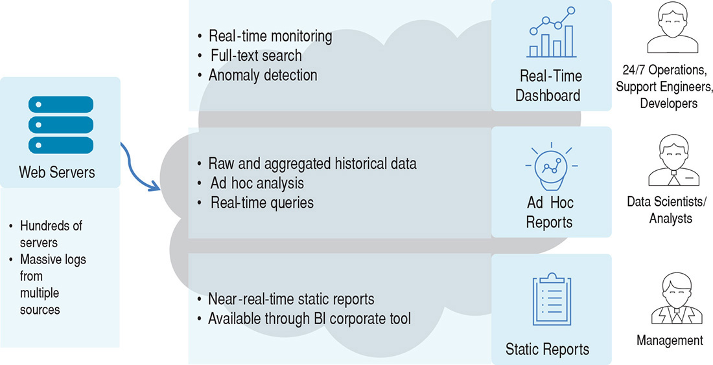

Big Data System Design
Roelant Ossewaarde / HU
Dag 2, 8 februari 2019
1 Bepalen van requirements
Gebaseerd op hoofdstuk 5 van "Designing Software Architectures" (Cervantes & Kazman 2016).
Business case: Een Internet bedrijf bedient veel klanten dmv. online-content (vgl. reddit). Al hun systemen maken logs aan met gegevens over de systemen, gedrag van gebruikers, etc. Deze logs worden gebruikt om bedrijfsprocessen bij te sturen.
De infrastructuur groeit hard; er is behoefte aan een nieuw systeem waarmee de verschillende stakeholders inzicht kunnen krijgen in de gelogde gegevens.
1.0.1 Marketecture

1.0.2 Use case model
- UC-1: Monitor online services
Mensen van operations moeten de huidige staat van de diensten en infrastructuur kunnen monitoren (zoals web load, aantal gebruikers, etc) op een real-time dashboard.
- UC-2: Troubleshoot online service issues
Als er problemen zijn, moeten systeembeheerders snel door recente logs kunnen zoeken naar relevante berichten over het systeem.
- UC-3: Provide management reports
Voor managementrapportages moeten er over een lange termijn logs opgevraagd kunnen worden over bijvoorbeeld het gebruik van de infrastructuur en knelpunten.
- UC-4: Support data analytics
- UC-5: Anomaly detection
- UC-6: Provide security reports
1.0.3 Quality attribute scenarios
- QA-1 Performance
Het systeem moet 15000 events per seconde van ongeveer 300 web servers kunnen afhandelen.
- QA-2 Performance
Het systeem zal het dashboard updaten met maximaal 1 minuut vertraging (latency).
- QA-3 Performance
Het systeem zal real-time queries ondersteunen voor troubleshooting met een maximum query tijd van 10 seconden over data van 2 weken terug in het verleden.
- QA-6 Schaalbaarheid
Het systeem zal ruwe data voor de laatste 2 weken apart beschikbaar stellen voor full-text searches.
- QA-7 Schaalbaarheid
Het systeem zal ruwe data opslaan voor de afgelopen 60 dagen (1 Tb ruwe data per dag, 60 Tb ruwe data totaal).
1.0.4 Constraints
- CON-1 Gebruik open source
Vanwege kostenoverwegingen zal het systeem primair gebruik maken van Open Source software.
- CON-2 Gebruik visualizatie
Het systeem zal gebruik maken van een corporate BI-tool met een SQL-interface voor het visualizeren van informatie.
- CON-3 Deployment
Het systeem zal zowel in een private cloud als in een publieke cloud geïntegreerd kunnen worden. Architectuurbeslissingen moeten zo min mogelijk vendor-specifiek (Google, Amazon) zijn.
2 Design proces:

2.1 Stappen in Iteratie #1
- Review Inputs
Bepaal welke use cases significant zijn.
- Bepaal het doel van de iteratie op basis van de drivers
De drivers zijn de kwaliteitsattributen en constraints die van belang zijn voor de significante use cases (uit stap 1).
- Kies elementen van het systeem om over te besluiten
In een eerste iteratie is dat het hele systeem.
- Kies design concepten voor de gekozen drivers uit stap 2.
Geef ook een reden waarom je voor andere mogelijke design concepten niet hebt gekozen. Relevante designkeuzes voor databasetechniek: Reference architectures for Data Analytics.
- Bepaal verantwoordelijkheden en interfaces
In een eerste iteratie nog niet relevant.
- Schets architectuur en documenteer beslissingen.
- Review